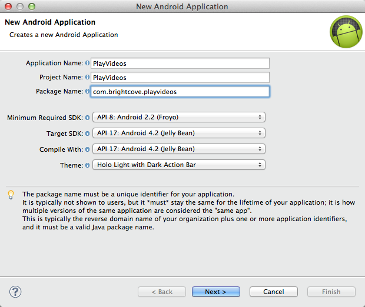
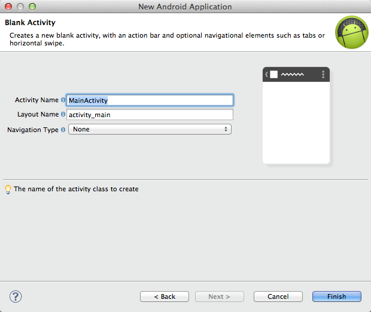
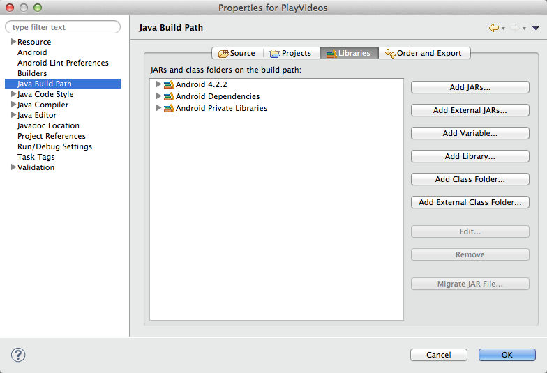
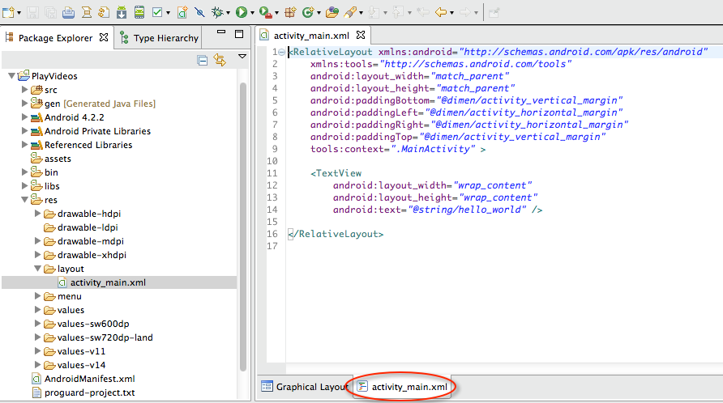

ADT - Brightcove Player SDK for Android Quick Start
In this quick start you will create an app in Android Development Tools which plays a single video, a video from a Brightcove Video Cloud account, and lastly videos from a Brightcove Video Cloud playlist, all using the Brightcove Player SDK for Android.
After completing this Quick Start you should be able to:
- Create a project and add the Brightcove Player SDK for Android as a library.
- Alter the layout to include a BrightcoveVideoView.
- Add to the onCreate method to play videos from different sources.
Audience
Developers interested in using the Brightcove Player SDK for Android in an Android app.
Prerequisites
- A minimal knowledge of Java and Android app development.
Get ready
Task: Get ready for development by installing needed software
In this task, you will install the ADT (Android Development Tools) plugin into your existing Eclipse install, or alternatively install the ADT that includes Eclipse. You will also download and unzip the Brightcove Player SDK for Android.
Install the ADT plugin into an existing Eclipse install or the ADT bundle (Eclipse and ADT plugin package)
- Download the plugin (http://developer.android.com/sdk/installing/index.html) or the bundle (http://developer.android.com/sdk/installing/bundle.html).
- Follow the directions on those pages to install the appropriate tool set.
Download and unzip the Brightcove Player SDK for Android
- Click here and download the Brightcove Player SDK for Android. Unzip the file. Location of the unzipped files is not critical, just note where they are.
- In your file viewer, move to where you unzipped the files and you will find the SDK archive file contains six other zip files. Unzip the android-sdk-4.x.x.zip file. From this archive can see the android-sdk-4.x.x.jar file, which you will later add to your library.
Create a project
Task: Create a project and associate the player SDK with the project
In this task, you will create a project in ADT then link to the player SDK .jar file to add it as a library
Create a project in ADT
- Open ADT then select File > New > Android Application Project.
- Supply and Application Name, Project Name and Package Name. In this quick start the values show below are used:
 - Click Next.
- Uncheck the Create custom launcher icon checkbox and click Next.
- Accept the defaults of creating a Blank Activity and click Next.
- Accept the defaults for the activity details (see following screenshot) and click Finish.

Add the SDK .jar file as a library of the project
- Be sure the new project is selected and choose Project > Properties (or right-click on the project and select Properties).
- From the left menu choose Java Build Path, the from the horizontal menu choose Libraries.

- Click the Add External Jars... button.
- Browse to where you unzipped the SDK and from the sdk folder select the android-sdk-4.x.x.jar file.
- Select the Order and Export menu item.
- Check the checkbox in front of the Brightcove SDK .jar file.
- Click OK to close the project properties dialog.
Code the application
Task: Code the application layout and logic
In this task, you will write the code to layout the app, build the video list, and play the videos
Define the app's layout
- Be sure the file
activity_main.xmlis open in a tab. If it is not, it is located in the res/layout folder. - Click the tab at the bottom of the file's tab to see the raw XML.

- Replace the existing contents with the following to determine the app's layout and place a Brightcove video view object in the app. Note: the
idfor the view is namedbc_video_view.<RelativeLayout xmlns:android="http://schemas.android.com/apk/res/android" xmlns:tools="http://schemas.android.com/tools" android:layout_width="match_parent" android:layout_height="match_parent" tools:context=".MainActivity" > <com.brightcove.player.view.BrightcoveVideoView android:id="@+id/bc_video_view" android:layout_width="wrap_content" android:layout_height="wrap_content" /> </RelativeLayout>
If you wish, at this point you can run the application. All you will see is the menu bar across the top, but it will confirm all the steps up to this point you have performed correctly.
Enable the app to use the Internet
- At the root of the project open the file
AndroidManifest.xml. - At the bottom of the file's tab click the far-right tab to view the raw XML.
- Immediate after the
<uses-sdk .../>code block, insert the following to enable Internet access.
<uses-permission android:name="android.permission.INTERNET"/>
Import the appropriate classes
- In the folder
src/com.brightcove.playvideos, open the fileMainActivity.java. - Just below the package name, add the following to the currently imported classes.
import java.util.ArrayList;
import java.util.List;
import android.widget.MediaController;
import com.brightcove.player.model.Video;
import com.brightcove.player.view.BrightcoveVideoView;Of course, as is standard Eclipse functionality, as you use classes they will automatically be imported. You may choose to take advantage of that functionality rather than doing all the imports now.
Create the BrightcoveVideoView
- In
MainActivity.java, locate the functiononCreate. - Below any existing code in the function, create an instance of
BrightcoveVideoViewand associate it with the layout using the following:
final BrightcoveVideoView bcVideoView = (BrightcoveVideoView) findViewById(R.id.bc_video_view);Create a List and add videos to it
- Below the code you just entered, create a List and add two videos to the list using the following:
List<Video> videoList = new ArrayList<Video>();
videoList.add(Video.createVideo("http://solutions.brightcove.com/bcls/assets/videos/Bird_Titmouse.mp4"));
videoList.add(Video.createVideo("http://solutions.brightcove.com/bcls/assets/videos/Water-Splashing.mp4"));Add controls to the player
- Add controls to the player:
MediaController controller = new MediaController(this);
bcVideoView.setMediaController(controller);Play the videos
- Associate the video list with the view:
- Finally, start the first video playing:
- Check to be sure your
onCreatemethod appears as follows:
bcVideoView.addAll(videoList);bcVideoView.start();Run the application
Task: Test the application and ensure the video plays
In this task, you will test your app to see the videos playing
Run the app either in the simulator or a device
- Connect an Android device, if you have one, to your computer.
- Right-click on the project, then select Run As > Android Application.
- As show in the following screenshot, you can choose your device or the simulator:

- You should now see the first video start, and when it finishes the second video will play automatically.
Get and play video
Task: Retrieve a video from Video Cloud and then play the video
In this task, you will use the Catalog class to retrieve a single video from the Video Cloud server, then play it. The Catalog class provides asynchronous methods for retrieving information about videos and playlists from Brightcove's Media API services.
Remove unneeded code
- Some code from the previous app is not longer needed. Remove the following:
- The imports of Java's
ListandArrayList - The three lines of code in the onCreate method that create and populate the video list
List<Video> videoList = new ArrayList<Video>(); videoList.add(Video.createVideo("http://solutions.brightcove.com/bcls/assets/videos/Bird_Titmouse.mp4")); videoList.add(Video.createVideo("http://solutions.brightcove.com/bcls/assets/videos/Water-Splashing.mp4"));
- The imports of Java's
- The two lines of code that add the video list to the video view and start the video
- Confirm your
onCreatemethod appears as follows:
bcVideoView.addAll(videoList);
bcVideoView.start();@Override
protected void onCreate(Bundle savedInstanceState) {
super.onCreate(savedInstanceState);
setContentView(R.layout.activity_main);
final BrightcoveVideoView bcVideoView = (BrightcoveVideoView) findViewById(R.id.bc_video_view);
MediaController controller = new MediaController(this);
bcVideoView.setMediaController(controller);
}Retrieve a video from the Catalog
- From Video Cloud Studio navigate to Home > Account Settings > API Management and copy a token that has the URL Access option.
- In your code below the creation of the
BrightcoveVideoViewinstance, create an instance of theCatalogusing the following and substituting your token: - From the Video Cloud Studio's Media module select a video then from the right-hand side of the screen copy the Video ID.
- In your code below the two lines that deal with the MediaController, use the Catalog's
findVideoByIDmethod using your video ID and aVideoListenerfor the callback. - In the
VideoListeneradd theonVideomethod. The method accepts aVideoobject as a parameter. - In the
onVideomethod, add the video tobcVideoView, then start the video. - Add an
onErrormethod which throws the error - Check to be sure your MainActivity.java file appears as follows:
- Run the app to confirm the video plays.
Note: If you are not familiar with tokens please see Managing Media API Tokens.
final Catalog catalog = new Catalog("XGuquNMCweRY0D3tt_VUotzuyIASMAzhUS4F8ZIWa_e0cYlKpA4WtQ..");catalog.findVideoByID("1754276221001", new VideoListener() {
});The VideoListener identifies objects that expect to receive a Video object from an asynchronous operation. On a successful operation, an onVideo() method will be called. If there is an error in the operation, an onError() method will be called.
catalog.findVideoByID("1754276221001", new VideoListener() {
@Override
public void onVideo(Video video) {
}
});catalog.findVideoByID("1754276221001", new VideoListener() {
@Override
public void onVideo(Video video) {
bcVideoView.add(video);
bcVideoView.start();
}
});catalog.findVideoByID("1754276221001", new VideoListener() {
@Override
public void onVideo(Video video) {
bcVideoView.add(video);
bcVideoView.start();
}
@Override
public void onError(String error) {
throw new RuntimeException(error);
}
});The onCreateOptionsMenu method was removed. It is in the automatically generated code, but since you have not altered it the method can be removed and the functionality is not changed.
Get and play playlist
Task: Retrieve a playlist from Video Cloud and ensure it plays correctly
In this task, you will use the Catalog class to retrieve a playlist from the Video Cloud server, then play the videos in the playlist. The Catalog class provides asynchronous methods for retrieving information about videos and playlists from Brightcove's Media API services.
Remove unneeded code
- Some code from the previous app is not longer needed. Remove the following:
- The imports of the
VideoandVideoListener - The call to the Catalog's
findVideoByIDmethod, and the associatedVideoListeneranonymous callback function.
catalog.findVideoByID("1754276221001", new VideoListener() {
@Override
public void onVideo(Video video) {
bcVideoView.add(video);
bcVideoView.start();
}
@Override
public void onError(String error) {
throw new RuntimeException(error);
}
});Retrieve a playlist from the Catalog
- The existing catalog instance will work for retrieving a playlist, so no changes are necessary to this line of code:
- In Video Cloud Studio's Media module click the All Playlists option.
- Double-click one of the playlists, and just above the list of video in the playlist copy the Playlist ID.
- In your code below the two lines that deal with the MediaController, use the Catalog's
findPlaylistByIDmethod using your playlist ID and aPlaylistListenerfor the callback. - In the
PlaylistListeneradd theonPlaylistmethod. The method accepts aPlaylistobject as a parameter. - In the
onPlaylistmethod, retrieve the videos from the playlist, add all of the videos tobcVideoView, then start the first video. - Add an
onErrormethod which throws the error - Check to be sure your MainActivity.java file appears as follows:
- Run the app to confirm the two videos from the playlist play.
final Catalog catalog = new Catalog("XGuquNMCweRY0D3tt_VUotzuyIASMAzhUS4F8ZIWa_e0cYlKpA4WtQ..");catalog.findPlaylistByID("1752604519001", new PlaylistListener() {
});The PlaylistListener identifies objects that expect to receive a Playlist object from an asynchronous operation. On a successful operation, an onPlaylist() method will be called. If there is an error in the operation, an onError() method will be called.
catalog.findPlaylistByID("1752604519001", new PlaylistListener() {
@Override
public void onPlaylist(Playlist playlist) {
}
});catalog.findPlaylistByID("1752604519001", new PlaylistListener() {
@Override
public void onPlaylist(Playlist playlist) {
bcVideoView.addAll(playlist.getVideos());
bcVideoView.start();
}
});catalog.findPlaylistByID("1752604519001", new PlaylistListener() {
@Override
public void onPlaylist(Playlist playlist) {
bcVideoView.addAll(playlist.getVideos());
bcVideoView.start();
}
@Override
public void onError(String error) {
throw new RuntimeException(error);
}
});You're done! Thanks for working through the Android SDK Quick Start.